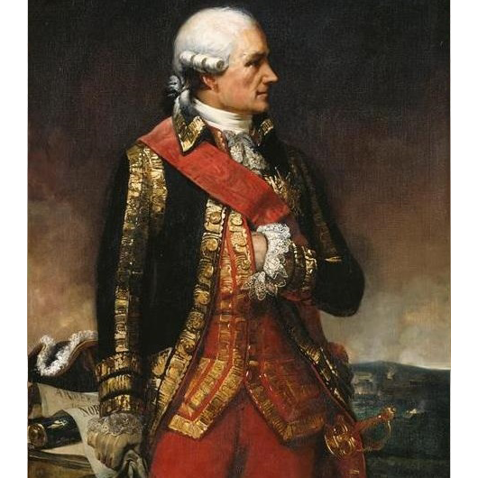

Portrait of Montcalm

Portait of Rochambeau
|
INTRODUCTION
This website contains articles that I published or presented at conferences between 1989 and 1996 that emerged from my M.A. thesis “On a Distant Campaign: French Officers and Their Views on Society and the Conduct of War in North America During the Seven Years’ War” (1986) and my Ph.D. dissertation “Subjects and Citizens: French Officers and the North American Experience, 1755-1783” (1992), both defended at Queen’s University in Kingston, Ontario.
I also have a link to an article entitled “A Different Kind of Courage: The French Military and the Canadian Irregular Soldier during the Seven Years’ War” that was published in the Canadian Historical Review in 1989 and later reprinted in a university textbook, Carl M. Wallace et al., Reappraisals in Canadian History: Preconfederation (Scarborough, Ont.: Prentice-Hall Canada, 1996), pp, 165- 86.
I left academia in September 1994 in order to obtain a Bachelor of Education degree at the University of Toronto and become a high school history teacher, but since most of my academic writing was done while I was an Instructor and Adjunct Assistant Professor in the Department of History at Queen’s University just before the Internet became prominent, most of my work has languished in obscurity, with the exception of my abovementioned article in the Canadian Historical Review, which is still regularly cited in books connected with the Seven Years’ War in North America. I have therefore decided to post some of my work on this website in case it is of interest to scholars or students. I have avoided the temptation to edit my work and modify my interpretations in the light of several decades of reading and teaching history.
|
Website designed, coded, and created by Julian Nicolai